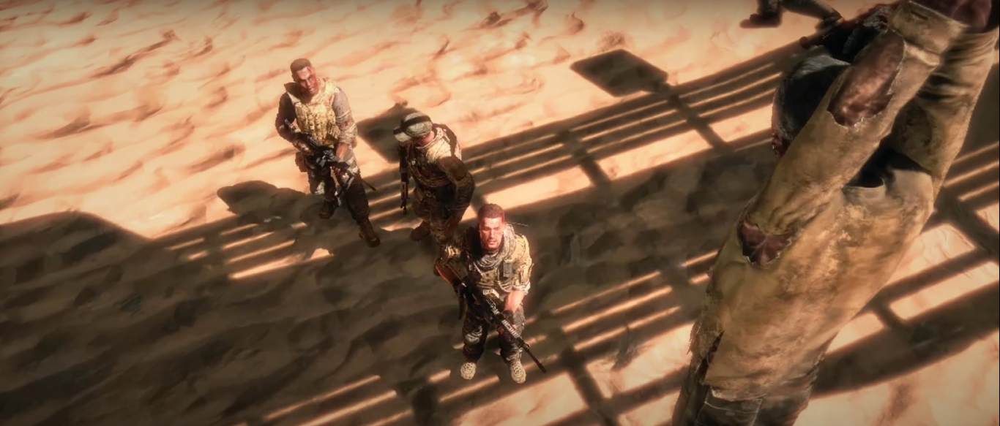

Horas antes de los primeros acontecimientos...
Misión: 1
Lugar: Sur de Áncash
Día: 25/05/2119
Hora: 4:30pm
Nos dirijamos hacia la antigua ciudad de Áncash para la misión de reconocimiento Había un letrero que daba la bienvenida en la carretera. Josue se asomó a la
ventana para tomar aire y a lo lejos observo que había una persona colgada del cuello en el poste que sostenía el letrero. Josue nos avisó para revisar
el extraño avistamiento.
El cadáver era de un hombre, el cuerpo estaba bastante descompuesto, en su cuello tenia colgado un letreo que no se alcanzaba a ver que decía.
Antes que la Guerra se hiciera oficial varios países construyeron bunkers para resguardarse de un holocausto nuclear. Perú comenzó este plan demasiado tarde,
solo alcanzo a construir 3 bunkers para proteger apenas a 2 millones de personas a lo largo del país (Estas personas iban a ser escogidas al azar, pero tenían
que cumplir unos requisitos de salud o si tenían antecedentes penales). Pocos días antes de que sucediera el “Primer Impacto” varias organizaciones y empresas
terminaron de construir sus propios bunkers con altos e inflados precios de venta. Estos bunkers resistieron el “Primer Impacto”, pero no llegaron a aguantar
el “Segundo Impacto” o los problemas que generaron después.
Es sorprendente como estas empresas o lo que sea que fueran priorizaron sus varios millones antes que la supervivencia humana, sabiendo que tal vez todo ese
dinero que vayan a obtener en esas ventas luego solo sea una montaña de papel basura (Lo cual ahora técnicamente es). Conozco algunas de estas personas que
con las ganancias que tuvieron pagaron a algunos encargados de los bunkers nacionales para que les den un espacio porque sabían de que los suyos eran una chatarra.
Tal vez este señor era uno de los elegidos pero que unos cuantos kilos de papel hiso que no lo fuera.
-Mierda...- Resoplo Josue.
No podíamos hacer nada con el cadáver y no tenía nada interesante aparte de esas palabras. Luego seguimos por unos minutos hasta llegar a lo que parecía ser un pueblo
con algunas casas deterioradas y con algunas montañas de escombros a sus lados. Ya era un poco tarde y el equipo pensó que la mejor idea era escoger este lugar como punto
de control. Nos estacionamos atrás de una montaña de escombros para “esconder” el coche y ordenamos nuestro equipamiento en un cuarto de la casa que estaba alado de los
escombros antes mencionados.
Luego nos dividimos en dos grupos de cuatro y cada grupo llevaba una radio para comunicarnos entre sí.
Despues de que mi grupo saliera, Eduardo junto al suyo, prendieron una fogata, utilizaron unos ladrillos como sillas, se sentaron y empezaron a comer y beber.
-Yo estaba contigo ese día que le tiraron una cachetada a Thomas ¿No te acuerdas Edu? - Dijo Álvaro.
-Nada mano, no me acuerdo. Creo que me estas confundiendo con Daniel- Respondió Eduardo.
-No, Daniel ese día estaba con Josue en otro lado- Dijo Alexis.
- Que hablas, esa tarde yo estaba contigo Alexis y Daniel- Respondió Eduardo.
-No, yo estaba con Thomas- Dijo Alexis cruzado de brazos.
-A la firme ya me confundieron chicos- Agrego Álvaro.
-No sé de que hablan, pero mejor termina tu sopa Álvaro- Dijo Miguel.
-Si, mejor terminemos nuestra comida- respondió Alexis.
Pasaron los minutos entre conversaciones hasta que la oscura noche tomo lugar, solo se podía ver algunos metros que cubría la fogata, mas haya solo era un oscuro negro,
no se diferenciaba ni un poco un cuarto con una pradera, todo era muy parejo. El silencio era lo peor, solo se podía escuchar las respiraciones del equipo. No había
nada de qué hablar todos tenían la boca llena de comida, era un poco aterrador el ambiente para solo comer, pero tenían hambre.
El sonido entre cortado de la radio rompió el silencio. Miguel con la cuchara saliendo de su plato se le cayo del susto de la radio. Eduardo agarro la radio y escucho
la pregunta “¿se movieron de la camioneta?” el respondió “Aquí Eduardo, seguimos en el mismo punto. Cambio”.
- ¿Qué paso con los chicos? - Pregunto Miguel.
-Creo que están en problemas…- Respondió Eduardo-. Mejor hagamos puntos de vigilancia, pueden salir algunas criaturas a estas horas por estos lares.
- ¿Criaturas? Pensaba que solo era un mito de los milicos que protegían las afueras de lima-agrego Alvaro.
-Mitos o no, se le escuchaba asustad. Aparte un puma puede estar alado tuyo y tu ni cuenta por esta oscuridad. Así que hay que organizarnos para proteger este lugar- Volvió a responder Eduardo.
Edu abrió su mochila y saco un papel con unos lapiceros y empezó a dibujar el perímetro.
-Oye, dibujas hasta el chompi ¿eso es una casa mano? -
-Jajaja, Ya mano no te burles. -Se rio Eduardo -Miren Alexis con Miguel pasaron la noche juntos.
-Sauu...-interrumpió Álvaro.
-Ya mano Cálmate. -Miro a los ojos a Alvaro. -Miguel mirara la parte izquierda en la que solo hay hierbas y esas cosas, mientras que Alexis mirara la carretera de arriba.
-iré sacando los lentes de visión nocturna del cuarto- respondió Miguel.
-Luego Alvaro estará en la casa alado del carro y vigilará la carretera-.
-Ya, pero porque el carro es más grande que la casa, tu dibujo no tiene sentido-Agrego Alvaro.
-Oe conchesu, -Resoplo Eduardo molesto. - Ya mano voy a borrar esta cochinada por ti mano tamare. En fin, yo estaré en este monte mirando la parte derecha de la carretera.